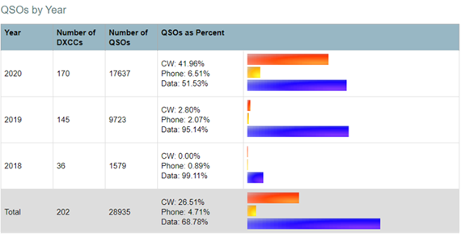

Good for you, Roberto. CW has always been my favorite mode! 73, Steve N6SJ From: Chat <chat-bounces@ncdxc.org> On Behalf Of Roberto Sadkowski via Chat Here are my statistics since I was born a Ham in 2018. Any DX QSO is memorable…  If Chris: N6WM were looking he would be proud of CW vs Data improvement… 😊 73, K6KM From: Paul N6PSE via Chat 2020 is almost over, what was your best DX of 2020? Looking over my log, I was crazy busy on FT8 and filled a lot of band slots. I don't think I had any new countries this year but the highlights are: Worked VP8PJ So Orkney in February from 15m to 160m on SSB/CW, RTTY and FT8. I also worked at E44CC Palestine in Feb for a few band slots. TI9A Cocos Island was also great fun in early February. Working SU3YM, SU1SK, HZ1ZM on FT8 during the Summer months were also memorable.
Paul N6PSE H A P P Y T H A N K S G I V I N G ! |